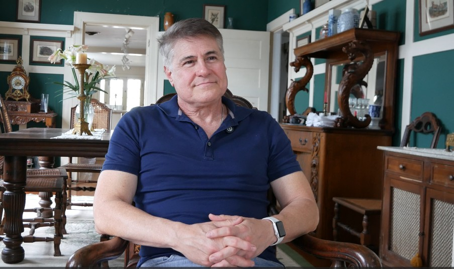

Life Story Films
Thoughtful interview-based films designed to preserve a person’s voice, wisdom, memories, personality, and lived experience.
- Guided conversational filming
- Beautiful edited keepsake film
- Ideal for parents, grandparents, or loved ones
A documentary-style interview experience that preserves the stories, wisdom, and voice of the people who shaped your life.
Filmed with care and shaped into a cinematic keepsake your family can return to for years to come.
A guided documentary-style interview experience designed to preserve a person’s voice, stories, and personality in a way that feels warm, meaningful, and timeless.
Whether you are honoring a loved one, preserving family memories, capturing a meaningful recipe, or telling the story behind your business, each project is approached with care and intention.
Thoughtful interview-based films designed to preserve a person’s voice, wisdom, memories, personality, and lived experience.
A heartfelt film created from submitted clips, photos, voice notes, and supporting footage to honor someone special for a birthday, memorial, anniversary, retirement, or celebration.
Preserve a beloved family recipe with the hands, voice, process, and story behind it — so the memory lives on beyond the written card.
Story-driven video content that helps audiences feel the heart behind your work, from founder stories and brand features to service-based content.
For showers, anniversaries, retreats, or family gatherings where the goal is more than documentation — it is preserving emotion, reflection, and voice.
If your vision does not fit neatly in a box, custom storytelling projects are welcome. The best films often begin with a conversation.
“The most meaningful stories are often the ones we assume we will have more time to capture.”
The Storied Portrait was built around the belief that ordinary voices matter, everyday memories matter, and the people we love deserve to be remembered in motion, in expression, and in their own words.

This featured film now uses your selected YouTube story so visitors can immediately experience the emotional depth of your work.


The experience is designed to feel thoughtful and easy. You do not have to arrive with polished words or a perfect plan. The goal is a genuine, beautifully captured story.
We talk through who the film is for, what kind of story you want to preserve, and what would make the project feel meaningful.
We shape the direction, setting, tone, and helpful preparation details so the filming day feels calm and clear.
The session is guided with care and conversation, leaving room for real emotion, personality, and meaningful detail.
Your footage is shaped into a polished film you can keep, revisit, and share with the people who matter most.
The Storied Portrait was created from a deep belief that every voice deserves to be remembered. Not only in photographs or facts, but in laughter, pauses, expressions, gestures, recipes, reflections, and the stories only that person can tell.
This work is especially meaningful for families, but it is also for founders, artists, couples, communities, and anyone who wants to preserve the human story behind what they love.
The approach is calm, intentional, and emotionally grounded — creating films that feel beautiful without losing their honesty.
The Storied Portrait creates story films, tribute films, family story films, and recipe capture films that preserve voice, personality, and connection in a way that feels warm, artful, and deeply human.
The language throughout the site can center on remembrance, storytelling, and keepsake value without feeling too heavy. It keeps the heart of the work intact while remaining inviting for families, gifts, and meaningful life moments.
Most story sessions are designed around a place that feels comfortable and meaningful, such as a home, family property, or other quiet setting.
No. The process is guided and conversational so the story feels natural rather than rehearsed.
Yes. Tribute films, family story films, and recipe capture projects all make deeply meaningful gifts.
The best place to begin is with a discovery call. We can talk through your idea, the person or purpose behind it, and what kind of film would serve it best.
Whether you are planning a personal story film, a tribute gift, a recipe capture project, or a business video, the first step is simply sharing the heart behind it.